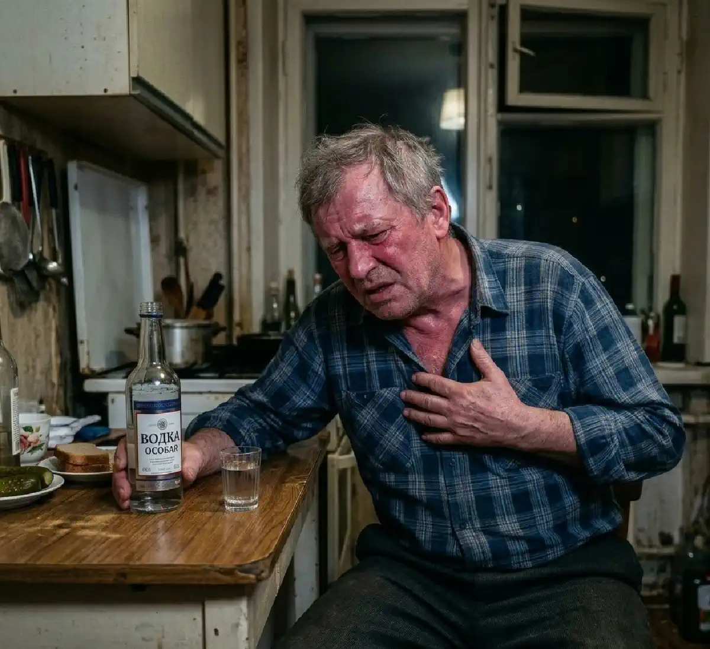

+38(068) 79 72 782
+38(068) 79 72 782Як алкоголь впливає на артеріальний тиск
Кожна чарка – навантаження на серце


Безкоштовна консультація, працюємо цілодобово 24/7
Кожна чарка – навантаження на серце

Дата написання: 28 лют. 2026 р.
Останнє оновлення: 18 вер. 2026 р.
Алкоголь здатний помітно впливати на артеріальний тиск, частоту серцевих скорочень, тонус судин і роботу нервової системи. Реакція організму при цьому не завжди однакова. В однієї людини невдовзі після вживання спиртного тиск може тимчасово знизитися, в іншої — підвищитися, а після великої дози алкоголю, тривалого вживання або запою можливі виражені коливання показників. Особливо уважно контролювати тиск після алкоголю необхідно людям із гіпертонією, захворюваннями серця, порушеннями ритму, хворобами нирок та іншими хронічними захворюваннями. Небезпеку становить не лише високий тиск, а й його різке зниження, особливо якщо одночасно виникають слабкість, запаморочення, порушення свідомості або інші тривожні симптоми.
Вплив алкоголю на артеріальний тиск залежить від кількості випитого, тривалості вживання, віку людини, стану серцево-судинної системи та лікарських препаратів, які вона приймає. Значення мають також зневоднення, нестача сну, тривога, куріння, вживання кофеїну та загальний стан організму. Після невеликої дози спиртного може відбуватися тимчасове розширення периферичних судин. Через це в деяких людей тиск спочатку трохи знижується. Однак одночасно алкоголь впливає на нервову систему та серцевий ритм. У міру збільшення дози або через кілька годин судинна реакція може змінюватися, частота серцевих скорочень підвищується, а тиск починає зростати. Після тривалого вживання ситуація стає ще менш передбачуваною. Особливо виражені стрибки тиску можливі під час похмілля та алкогольної абстиненції.
Зміна артеріального тиску після алкоголю пов’язана одразу з кількома механізмами. Спиртне впливає на тонус кровоносних судин, роботу вегетативної нервової системи, частоту серцевих скорочень і водно-електролітний баланс. Після вживання алкоголю організм може втрачати більше рідини. Якщо до цього приєднуються блювання, пітливість, недостатнє вживання води або відсутність нормального харчування, розвивається зневоднення. На його тлі тиск може як знижуватися, так і ставати нестабільним. Через кілька годин після вживання великої дози алкоголю може посилюватися активність симпатичної нервової системи. Людина відчуває серцебиття, тривогу, тремтіння, пітливість. Одночасно може підвищуватися артеріальний тиск.
Однозначно стверджувати, що алкоголь лише підвищує або лише знижує тиск, неправильно. Реакція може змінюватися навіть в однієї й тієї самої людини в різні періоди після вживання. У перші години судини можуть розширюватися, внаслідок чого тиск тимчасово знижується. Пізніше, особливо після значної кількості алкоголю, можливе прискорення серцебиття, активація нервової системи та підвищення тиску. При регулярному вживанні великих доз спиртного підвищується ймовірність стійкого порушення контролю артеріального тиску. Тому алкоголь не можна розглядати як засіб для зниження тиску навіть у тих випадках, коли після невеликої дози показники тимчасово стають нижчими.
Високий тиск після алкоголю може бути пов’язаний із прискоренням серцебиття, зміною судинного тонусу та посиленою активністю нервової системи. Ризик стає вищим після великої кількості спиртного або тривалого періоду вживання. Додаткову роль відіграють зневоднення, нестача сну, куріння, тривожність і фізичне перенапруження. У людей із уже наявною гіпертонією коливання тиску можуть бути більш вираженими. Іноді підвищення тиску супроводжується головним болем, почервонінням обличчя, серцебиттям, відчуттям внутрішнього напруження або тремором. Однак високий тиск може перебігати майже без симптомів, тому при поганому самопочутті бажано провести вимірювання тонометром.
Після вживання алкоголю можливе й зниження артеріального тиску. Однією з причин стає розширення периферичних судин. Додатково тиск може падати при зневодненні, недостатньому харчуванні, повторному блюванні або прийомі деяких лікарських препаратів. Людина може відчувати виражену слабкість, запаморочення, потемніння в очах під час вставання, холодний піт, хиткість, сонливість або переднепритомний стан. Якщо зниження тиску супроводжується непритомністю, вираженою слабкістю, болем у грудях, утрудненим диханням або сплутаністю свідомості, потрібна термінова наркологічна допомога.
Після потрапляння алкоголю в організм тонус судин змінюється. Спочатку може відбуватися їх розширення, тому людина відчуває тепло та почервоніння шкіри. Таке відчуття не означає, що кровообіг стає безпечнішим або що алкоголь корисний для судин. У міру зміни концентрації алкоголю в крові судинна реакція стає складнішою. Може активуватися симпатична нервова система, збільшуватися частота серцевих скорочень і зростати судинний опір. При регулярному вживанні великих кількостей спиртного подібні зміни повторюються постійно. У поєднанні з порушенням сну, зневодненням та іншими факторами це створює додаткове навантаження на серцево-судинну систему.
Підвищений тиск вранці після алкоголю трапляється досить часто. До цього моменту концентрація етанолу вже знижується, але наслідки його впливу на організм зберігаються. Людина може відчувати зневоднення, порушення сну, тривожність, прискорений пульс, головний біль і загальну слабкість. Після вживання великої кількості спиртного активність нервової системи може залишатися підвищеною, що сприяє зростанню тиску. У людей, які регулярно вживають алкоголь, ранкове підвищення тиску іноді є одним із проявів алкогольної абстиненції, що починається. При вираженому погіршенні стану може знадобитися терміновий виклик нарколога.
Під час похмілля артеріальний тиск може відрізнятися від звичайних показників людини. Одночасно нерідко спостерігаються головний біль, нудота, спрага, сухість у роті, слабкість, прискорене серцебиття та тривожність. Не слід намагатися оцінювати стан лише за наявністю головного болю. Цей симптом може бути пов’язаний не тільки з підвищеним тиском, а й зі зневодненням, недосипанням та впливом продуктів обміну алкоголю. Якщо виражені зневоднення, слабкість, тремор, нудота та інші симптоми інтоксикації, лікар після огляду може визначити необхідність крапельниці від алкоголю вдома або іншого варіанта медичної допомоги.
Алкогольна абстиненція розвивається в людей, організм яких адаптувався до регулярного вживання спиртного. Після різкого припинення або значного зменшення кількості алкоголю нервова система стає надмірно активною. У цей період можуть виникати високий тиск, тахікардія, виражений тремор, пітливість, тривога, дратівливість, безсоння, нудота та головний біль. При вираженому абстинентному синдромі може знадобитися медичне лікування алкогольної абстиненції з попередньою оцінкою стану пацієнта. Тяжка абстиненція потенційно небезпечна. Якщо з’являються судоми, галюцинації, виражена сплутаність свідомості, дезорієнтація або сильне збудження, домашнє самолікування неприпустиме — людині необхідна термінова медична допомога.
Після кількох днів безперервного або майже безперервного вживання алкоголю організм зазнає значного навантаження. Порушуються водно-електролітний баланс, сон, харчування та робота нервової системи. Тому після припинення запою тиск може бути нестабільним. Він здатний підвищуватися, тимчасово знижуватися або істотно змінюватися протягом доби. При поганому самопочутті важливо не лише знизити показники тиску, а й оцінити наслідки тривалого вживання алкоголю. Залежно від стану лікар може рекомендувати виведення із запою вдома або госпіталізацію. Особливо небезпечні спроби різко коригувати такі показники випадково обраними ліками. Лікар повинен враховувати не лише значення тиску, а й пульс, тривалість запою, наявність блювання та зневоднення, хронічні захворювання і препарати, які пацієнт приймає постійно.
Після тривалого вживання високий тиск може зберігатися навіть тоді, коли людина вже припинила вживати спиртне. У перші години та дні особливо важливо спостерігати не лише за показниками тонометра, а й за симптомами алкогольної абстиненції. Якщо людина багато днів вживала алкоголь, погано харчувалася, майже не спала та втратила багато рідини, стан може швидко змінюватися. Після огляду лікар визначає, чи потрібна детоксикація від алкоголю, симптоматичне лікування або спостереження у стаціонарі. Самостійний прийом кількох препаратів одночасно або спроба різко знизити тиск можуть погіршити стан.
Регулярне вживання значних кількостей алкоголю пов’язане з підвищеним ризиком розвитку стійкого підвищеного артеріального тиску. Чим довше зберігається таке вживання, тим вищим є навантаження на серцево-судинну систему. На тиск впливає не лише сам алкоголь. При залежності часто порушується сон, змінюється харчування, збільшується маса тіла, людина може більше курити, відчувати хронічну тривогу та нерегулярно приймати призначені ліки. Після припинення тривалого вживання тиск не обов’язково нормалізується одразу. Якщо проблема пов’язана з регулярними запоями, після стабілізації стану важливо розглядати не лише симптоматичну допомогу, а й лікування алкогольної залежності.
У людей з артеріальною гіпертензією алкоголь може ускладнювати стабільний контроль тиску. Після вживання показники можуть тимчасово знижуватися, а потім знову підвищуватися. Особливо виражені коливання можливі після великих доз алкоголю та наступного дня. Додаткова проблема полягає у взаємодії алкоголю з деякими лікарськими препаратами. Залежно від препарату можуть посилюватися запаморочення, слабкість, сонливість або зниження тиску. Тому пацієнтам із гіпертонією не варто самостійно скасовувати призначені препарати перед вживанням алкоголю, подвоювати дозування після нього або приймати додаткові таблетки для швидкого зниження тиску.
При вже підвищеному тиску вживання алкоголю може додатково погіршити його контроль. Особливо небажано вживати спиртне при значному підвищенні показників, поганому самопочутті, тахікардії або симптомах похмілля та абстиненції. Алкоголь не є способом знизити тиск. Навіть якщо показники тимчасово зменшуються після вживання, пізніше тиск може знову зрости. Якщо людина постійно приймає препарати від гіпертонії, питання сумісності алкоголю з конкретним лікарським засобом краще обговорювати з лікарем, який знає призначену схему лікування.
При гіпертонії реакція серцево-судинної системи на алкоголь може бути більш вираженою. Особливо це стосується людей, у яких тиск уже погано контролюється або які нерегулярно приймають призначені препарати. Після спиртного можливі різкі зміни судинного тонусу, прискорення пульсу та підвищення тиску. Наступного дня вплив можуть посилювати зневоднення та нестача сну. Регулярні епізоди значного вживання алкоголю здатні перешкоджати ефективному лікуванню гіпертонії. Тому лікарю важливо знати реальну кількість алкоголю, яку вживає пацієнт, щоб правильно оцінити причини нестабільного тиску.
Якщо після алкоголю тиск виявився вищим за звичайний, насамперед необхідно припинити подальше вживання спиртного. Людині слід забезпечити спокійну обстановку, виключити фізичне навантаження та повторно виміряти тиск після нетривалого відпочинку. Вимірювати тиск бажано сидячи, після кількох хвилин спокою. Манжета повинна відповідати розміру, а рука під час вимірювання — знаходитися приблизно на рівні серця. Не слід самостійно змішувати кілька препаратів або приймати додаткову дозу ліків, якщо така схема заздалегідь не була рекомендована лікарем. При збереженні поганого самопочуття можна звернутися за послугою нарколог додому, щоб спеціаліст оцінив тиск, пульс, рівень свідомості, ознаки зневоднення та інші симптоми.
При зниженні тиску людина може відчувати слабкість, запаморочення та переднепритомний стан. У такій ситуації необхідно припинити вживання алкоголю та не вставати різко. Якщо людина перебуває при свідомості та може нормально пити, важливо запобігати подальшому зневодненню. Однак при багаторазовому блюванні або порушенні свідомості давати велику кількість рідини самостійно небезпечно. При вираженому зниженні тиску, непритомності, холодному липкому поті, порушенні дихання, болю в грудях або різкому погіршенні стану необхідно викликати екстрену медичну допомогу.
Оцінювати необхідність медичної допомоги потрібно не лише за цифрами артеріального тиску. Велике значення мають симптоми та вихідні показники конкретної людини. Особливої уваги потребує тиск близько 180/120 мм рт. ст. і вище, особливо якщо він підтверджується повторним вимірюванням після відпочинку. Якщо одночасно з’являються біль або стискання в грудях, задишка, порушення мовлення, слабкість або оніміння кінцівки, різке погіршення зору, сплутаність свідомості або незвично сильний головний біль, необхідно терміново звертатися за екстреною медичною допомогою. Небезпечним може бути й різке зниження тиску, якщо воно супроводжується непритомністю, вираженою слабкістю або порушенням свідомості.
Сам по собі підвищений тиск може не викликати виражених відчуттів. Тому орієнтуватися лише на наявність або відсутність головного болю не можна. Негайної медичної оцінки потребують біль або виражений тиск у грудях, утруднене дихання, втрата свідомості, судоми, раптова слабкість або оніміння руки, ноги чи частини обличчя, порушення мовлення, різке погіршення зору, виражена сплутаність свідомості, незвично інтенсивний головний біль, галюцинації або дезорієнтація після тривалого вживання алкоголю. При подібних симптомах не слід намагатися самостійно нормалізувати тиск і чекати на покращення.
Головний біль після алкоголю може мати кілька причин. Він буває пов’язаний зі зневодненням, порушенням сну, зміною судинного тонусу або підвищенням тиску. Якщо головний біль супроводжується підвищеними показниками на тонометрі, необхідно припинити вживання алкоголю, відпочити та повторно виміряти тиск у спокійному стані. Не варто приймати випадкові таблетки лише тому, що вони колись допомогли іншій людині. Деякі лікарські препарати після алкоголю можуть мати небажані взаємодії. При раптовому дуже сильному головному болю, порушенні мовлення, слабкості в кінцівках, погіршенні зору, блюванні, сплутаності свідомості або інших неврологічних симптомах необхідно терміново викликати екстрену медичну допомогу.
Можливість прийому препаратів від тиску після алкоголю залежить від конкретного лікарського засобу, призначеного дозування, кількості випитого спиртного та стану людини. Докладно це питання розглянуто в матеріалі чи можна приймати таблетки від тиску після алкоголю. Якщо препарат призначений для постійного лікування гіпертонії, не слід самостійно змінювати його дозування через вживання алкоголю. Особливо небезпечно приймати додаткову таблетку з метою швидко знизити тиск без рекомендації лікаря. Деякі антигіпертензивні препарати на тлі алкоголю здатні сильніше знижувати тиск, провокувати запаморочення та слабкість. Тому універсальної таблетки, яку можна безпечно прийняти будь-якій людині при підвищенні тиску після алкоголю, не існує.
Прагнення якнайшвидше отримати нормальні цифри на тонометрі може призвести до помилок. Тиск після алкоголю здатний змінюватися досить швидко, особливо при зневодненні, абстиненції та порушеннях серцевого ритму. Якщо на цьому тлі прийняти надмірну дозу ліків, тиск може знизитися надто різко. Це здатне спричинити запаморочення, слабкість, непритомність і погіршення кровопостачання життєво важливих органів. Крім того, погане самопочуття після алкоголю не завжди пов’язане виключно з тиском. Причиною можуть бути порушення серцевого ритму, тяжка абстиненція, гостре захворювання серця або інший стан, що потребує окремого лікування.
Медична допомога необхідна, якщо стан людини суттєво погіршується або домашнє спостереження не дозволяє безпечно оцінити ситуацію. Терміново звертатися за допомогою необхідно при втраті свідомості, судомах, порушенні дихання, болю в грудях, вираженій задишці, порушенні мовлення або рухів, повторному блюванні зі зневодненням, різкому погіршенні зору або сплутаності свідомості. Після тривалого запою окремої уваги потребують галюцинації, дезорієнтація, виражене збудження та судоми. Такі прояви можуть вказувати на тяжку алкогольну абстиненцію та потребують медичної оцінки, а нерідко й лікування у стаціонарі. При погіршенні стану після тривалого вживання алкоголю може знадобитися цілодобова наркологічна допомога.
Найнадійніший спосіб уникнути пов’язаних з алкоголем стрибків тиску — відмовитися від його вживання або суттєво його обмежити. Особливо важливо це для людей із гіпертонією та іншими серцево-судинними захворюваннями. Необхідно регулярно приймати призначені лікарем препарати та не змінювати схему лікування самостійно. Корисно контролювати тиск удома, особливо якщо раніше після алкоголю вже виникали його значні коливання. При повторюваних епізодах запою проблема потребує ширшого підходу. У такому разі важливо не лише нормалізувати тиск під час чергового погіршення стану, а й займатися лікуванням алкогольної залежності. Повторні цикли вживання та відміни алкоголю створюють постійне навантаження на нервову й серцево-судинну системи. Якщо тиск регулярно підвищується після вживання спиртного, стає нестабільним або залишається високим навіть у тверезому стані, варто звернутися до лікаря для обстеження. Це дозволить визначити причину змін і підібрати безпечну тактику лікування.

Статтю перевірено експертом
Робулець Ольга
Лікар-нарколог, ординатор
Можливо цікава стаття:
Набряки після пива

Так, ми суворо дотримуємося повної конфіденційності на всіх етапах лікування. Інформація про пацієнта, діагноз та проходження терапії не передається третім особам. Звернення до нас не тягне за собою постановку на облік. Ви можете бути впевнені у безпеці та анонімності.
Програма лікування розробляється індивідуально після консультації з фахівцем. Враховуються вид залежності, її тривалість, фізичний та психологічний стан пацієнта. Такий підхід дозволяє підвищити ефективність терапії та знизити ризик зриву. Ми не використовуємо шаблонні рішення.
Так, ми супроводжуємо пацієнтів і після основного курсу лікування. Проводяться консультації, рекомендації щодо адаптації та профілактики рецидивів. За потреби можлива подальша психологічна підтримка. Це допомагає зберегти результат та повернутися до повноцінного життя.
Номер телефону:
+380 (68) 797 27 82
+380 (50) 021 69 57
Адресу наркологічного центра вашого міста уточнюйте за
телефоном
Працюємо: Київ, Одеса, Львів, Харків, Дніпро, Запоріжжя,
Черкасах, Чугуєві, Чорноморську, Кам'янському
Telegram: t.me/umbrellaplus
Графік работы: Цілодобово